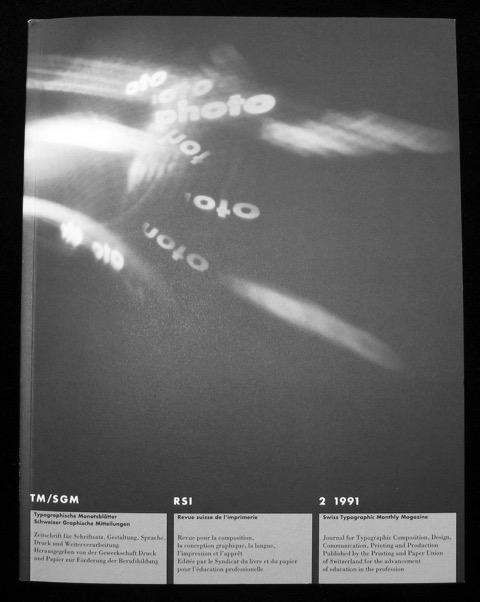
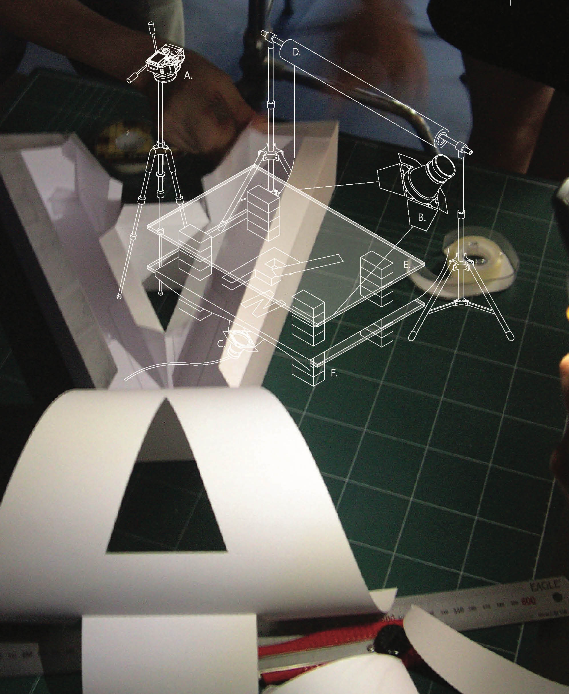

Designing With Light
Hello, My name is Franz Werner and this is my crowdfunding project.
“Designing with Light” contains 37 years of inspiring student work.
I chose self-publishing which requires independent financing for printing and binding of this book.
The book consists of over 500 projects, all the way from the wet photography method to digital videography, accompanied by diagrams explaining the process involved.
I want to make this work public—to democratize art.
So the question is, who is this book for?
My book will be a wonderful inspiration for anyone who appreciates art and design and wishes to be connected with form and function. Art infuses an inner peace of mind.
This book is a tribute to my students but also to my teachers.
I had the opportunity to study with the highly esteemed faculty of the Kunstgewerbeschule Basel, although I’m not nearly as accomplished as my teachers, but I always felt an obligation to share. Therefore, my contribution will be in the form of workshops at High Schools, Community Colleges, and for the less fortunate.
I would like to close by citing Einstein’s quote: “Imagination is more important than knowledge”.
Thank you for your support.


Hello, My name is Franz Werner and this is my crowdfunding project.
“Designing with Light” contains 37 years of inspiring student work.
I chose self-publishing which requires independent financing for printing and binding of this book.
The book consists of over 500 projects, all the way from the wet photography method to digital videography, accompanied by diagrams explaining the process involved.
I want to make this work public—to democratize art.
So the question is, who is this book for?
My book will be a wonderful inspiration for anyone who appreciates art and design and wishes to be connected with form and function. Art infuses an inner peace of mind.
This book is a tribute to my students but also to my teachers.
I had the opportunity to study with the highly esteemed faculty of the Kunstgewerbeschule Basel, although I’m not nearly as accomplished as my teachers, but I always felt an obligation to share. Therefore, my contribution will be in the form of workshops at High Schools, Community Colleges, and for the less fortunate.
I would like to close by citing Einstein’s quote: “Imagination is more important than knowledge”.
Thank you for your support.
Rewards
TM magazine $50
Uhren Bösch
$25 (Poster)
Veni Vidi Vici
$25 (Poster)
TM magazine $50
Uhren Bösch
$25 (Poster)
Veni Vidi Vici
$25 (Poster)

Examples from Book

The photogram presents the viewer with the perfect opportunity to focus on the form of the object(s) it documents, without being distracted by color or other decorative elements.


A successful double exposure isn’t solely based on two clever photographs, but also on how well the formal characteristics of either pictures combine.

Working in the Darkroom


Examples of Student Video